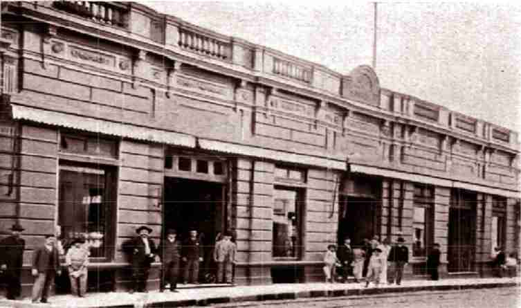

Among the commercial houses, the Sociedad Anónima Rius&Jorba of Don Juan Rius and Don Marcelino Jorba was the most important. It was founded in 1872 and operated in almost all import items, from clothing to hardware, bazaar and general stores. The company, refounded in 1909, with the incorporation of other partners, was also the owner of the Granados Theater.
The front of the property, on Palma Street, corresponds to the site currently occupied by the National Tourism Secretariat, while on Presidente Franco Street, the building still displays one of the most beautiful local art-deco creations.
The National Secretariat of Tourism SENATUR was created on December 30, 1998, an institution whose main task is to execute the national tourism policy, guiding, promoting, facilitating and regulating the development of tourism in Paraguay, for the benefit of visitors and citizenship in general.
Its main enclosure is located on one of the most important streets of the Historic Center of Asunción, Palma Street and also houses "El Turista Roga", a strategic point for tourists, since there is a permanent exhibition on this site. craft products from all over the country, and also offers tourist information to the visitor every day of the week.